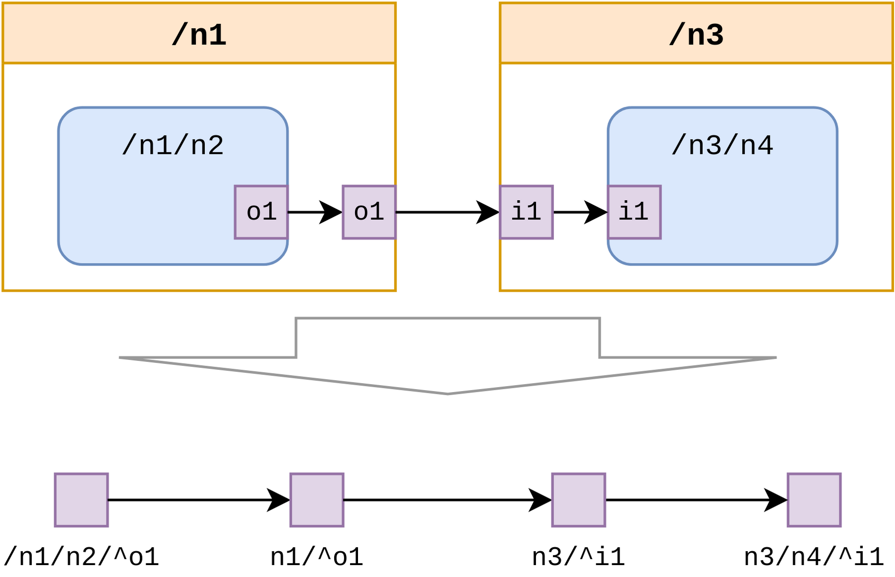

API Reference¶
All functions documented in the modules presented in this page are
re-exported by zoti_graph, so one does not need to import every
module below.
Loading or Dumping¶
There are several ways to read or write a graph in different formats.
- class ZotiGraphLoader(stream, **kwargs)[source]¶
YAML loader class with information for ZOTI-Graph inputs.
- dump_node_info(AG, stream)[source]¶
Dumps the entry information for all nodes in the AG graph as plain text to stream.
- draw_tree(AG, stream, root=None, with_ports=True, **kwargs)[source]¶
Draws only the hierarchical structure of the AG graph in a DOT file dumped to stream.
To draw only the sub-graph under an arbitrary node its UID should be passed as the root argument.
- with_ports toggles whether ports should be present in the plot
or not.
- draw_graphviz(AG, stream, root=None, max_depth=0, node_info=None, port_info=None, edge_info=None, **kwargs)[source]¶
Draws the AG graph, starting with root as top component and dumps the drawing in a DOT file in stream. If max_depth is not a positive number it is considered “infinite”.
The rest of the arguments are extraction functions for printing additional info (see Core types).
- dump_raw(G, stream)[source]¶
Serializes graph G to raw JSON and dumps it to stream. The stream will contain a 5-tuple:
the version of zoti-graph (to be compared when loading)
the name of the current graph format
the UID of the root node
a list of all node entries in the graph.
a list of all edge entries in the graph.
- from_raw(stream, version=None) AppGraph[source]¶
Deserializes a graph from a stream containing the raw JSON data as dumped by
dump_raw(). If version is passed, it will compare it against the loaded version and raise an error if they do not match.
The Graph API¶
- class AppGraph(format_name, root=/)[source]¶
A ZOTI application graph. Its methods are meant as general purpose utilities, however for more advanced functionality one might apply NetworkX algorithms directly on its
irmember.- ir: DiGraph¶
Internal representation of a ZOTI model as simple annotated digraph.
- decouple(uid) None[source]¶
Makes a deepcopy of an entry and replaces the original. Useful after replication-based transformations (e.g. port inference).
- new(uid: Uid, obj: Any) Uid[source]¶
Adds a new ZOTI node or port object to the current app graph. Returns uid for chaining it with other functions (see
register_child()orregister_port())
- register_port(parent_id: Uid, port_id: Uid) Uid[source]¶
Registers a pre-created port to a node (see
new()). Returns port_id.
- register_child(parent_id: Uid, child_id: Uid) Uid[source]¶
Registers a pre-created child node to a parent (see
new()). Returns child_id.
- connect(srcport, dstport, edge=<class 'zoti_graph.core.Edge'>, recursive=True)[source]¶
Connects two ports through an edge. If recursive is set to
Truethen it recursively creates intermediate ports and connections if the source and destination nodes belong to different parents. If an edge entry is provided then all the new edges will be associated with it, otherwise they will have no entry.
- ports(parent_id, select=<function AppGraph.<lambda>>) List[Uid][source]¶
Returns a list of IDs for all the ports of this parent. The result can be filtered by passing a select function on
zoti_graph.core.Portentries.
- children(parent_id, select=<function AppGraph.<lambda>>) List[Uid][source]¶
Returns a list of IDs for all the children of this parent. The result can be filtered by passing a select function on entries derived from
zoti_graph.core.NodeABC.
- parent(node_id) Uid | None[source]¶
Returns the ID for this node’s parent. If this node has no parent it returns None.
- commonAncestor(this: Uid, that: Uid) Uid | None[source]¶
Returns the ID of the common ancestor between this and that. If they have no common ancestor it returns None.
- port_edges(port_id, which='all') List[Tuple[Uid, Uid]][source]¶
Returns all edge identifiers connected to/from port_id. Can filter the in/out edges with argment which that can be
in,outorall.
- node_edges(node_id, which='all+all') List[Tuple[Uid, Uid]][source]¶
Returns all the edge identifiers entering or exiting the ports of this node, as list of ID pairs. The list can be filtered by to which a string formed as
"<direction>+<view>", where<direction>can bein,outorall.<view>can beinside,outsideorall.
- connected_ports(port, graph=None) Graph[source]¶
Returns a path graph representing the journey between two leaf nodes’ ports passing through a given port, see drawing. The search can be minimized by passing a subgraph to the graph argument containing the desired path.

- end_ports(port, graph=None) List[Uid][source]¶
Variant of
connected_ports()which returns a list with end ports insdead of the entire connected subgraph, i.e., ports whose connectivity degree is 1. In the previous example this would mean[/n1/n2/^o1, /n3/n4/^i1]
- has_ancestor(uid: Uid, ancestor: Uid) bool[source]¶
Checks if ancestor is indeed an ancestor of uid.
- depth(uid) int[source]¶
Checks at which depth in the hierarchy tree uid is found relative to the global root.
- bypass_port(port, ensure_fanout=False)[source]¶
Removes the port with a given ID and reconnects its upstream to its downstream connections. Useful when flattening hierarchies, e.g., unclustering the nodes under a
CompositeNode.
- copy_tree(root, new_name) Uid[source]¶
Copies the entire subgraph under an arbitrary root node to sibling a new sibling with new_name. Returns the ID of this new sibling.
ATTENTION: all the copied child nodes will refer to the original entries and will need to be
decouple()d first if any local alteration is intended.
- remove_tree(root, with_root=True)[source]¶
Removes the entire subgraph under an arbitrary root node. with_root toggles whether or not the root node will also be deleted.
- cluster(node, children)[source]¶
Clusters the children nodes represented with a list of IDs under a (fully-created and instantiated) node. Both node and children need to belong the same parent, otherwise an error is thrown.
- uncluster(node, parent=None)[source]¶
Unclusters all children of a node and reconnects them in the context of parent. If parent is not provided, then it is assumed to be the parent of node. Finally, node is removed along with all its ports.
- fuse_nodes(n1, n2, along_edges=None)[source]¶
Fuses two nodes n1 and n2 into a single node containing all children and all ports belonging to both actors. The fused node will bear the name and ID of n1. The argument along_edges can be used to skip searching which edges connect n1 and n2.
ATTENTION: rather unstable! It is the caller’s job to check that the resulting graph is consistent.
- node_projection(parent, no_parent_ports=False) MultiDiGraph[source]¶
Displays the projection of nodes upon a single level of hierarchy for all first children of parent. The first and the last nodes are the parent’s ports.
The projection view is a multi-digraph (i.e., directed graph with possibly parallel edges), where each edge contain an entry ports*=(*srcport,*dstport*).
- only_tree(root=None, with_ports=True) DiGraph[source]¶
Returns a graph view representing only the hierarchy between nodes. If root is provided, only the sub-tree under it is captured by the view. with_ports toggles whether ports are included in this view or not.
- only_graph(root=None, with_ports=True) DiGraph[source]¶
Returns a graph view representing only the application graph. If root is provided only the sub-graph under it is included in the view. with_ports toggles whether ports are included in this view or not.
- sanity(rule, *element_id)[source]¶
Performs sanity checking on the graph element identified as element_id (single argument for node, double argument for edge).
rule is an assertion function taking as arguments the current graph and element_id (see the Sanity Rules)
Core types¶
- class Uid(uid=None)[source]¶
Bases:
objectClass denoting unique identifiers for hierarchically organized entities. Internally is based on
PurePosixPathfrom pathlib.- Parameters:
uid – if
Nonethen the root path/is assumed